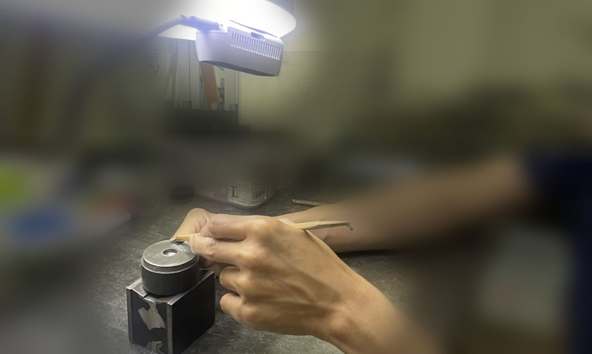
作業台の上にカメラを1台01 — RECORD現場の負担なく
現場の負担なく
導入できる
作業台の上にカメラを1台取り付けるだけ。作業する人に機器を付けてもらう必要はありません。映像の処理は現場のエッジ機器で行い、外部に送りません。
3DカメラとAI検出モデルで、手・工具・ワークの位置を測り、お手本の作業と比べます。どの工程で、どこが違うのかを、映像とデータで確かめられます。
AIが、その場で手順を教える。解析した作業を動画マニュアルにし、作業中は即時アドバイスAIが次の手順やアドバイスを表示。熟練者が付きっきりでなくても、新人が手順を覚えられます。
コツを、3Dの数字で残す。手の高さ・押さえ方・リズムを熟練者と比べ、言葉にしにくい違いを見つけます。技能の伝承の材料になります。
作業を毎日、自動で記録。作業の区切りと所要時間をタイムラインに残します。手順のずれや、改善前後の変化をあとから振り返れます。
撮る・見つける・測る・読み解く。nanoSTEPは、作業台の上の様子を3Dの位置データに変えて、作業を工程ごとに分析します。

作業台の上にカメラを1台作業台の上にカメラを1台取り付けるだけ。作業する人に機器を付けてもらう必要はありません。映像の処理は現場のエッジ機器で行い、外部に送りません。
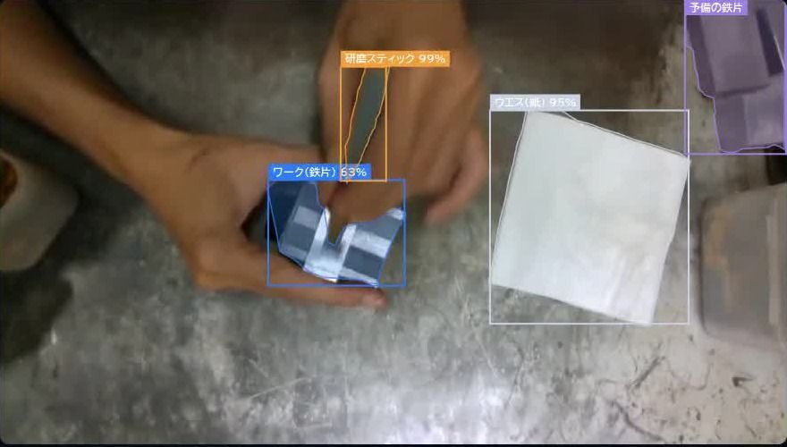
手・工具・ワークを検出AI検出モデルが、手の骨格と、研磨スティックやワークなどの道具・部品を見分けます。対象の作業に合わせて、検出する物を学習させます。
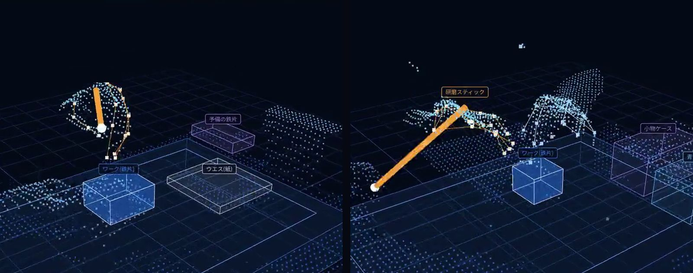
位置を3Dで計測3Dカメラで、手や工具がどこにあり、作業台からどれだけ浮いているかを計測します。平面の映像では分からない、押さえ方や角度の違いが見えます。
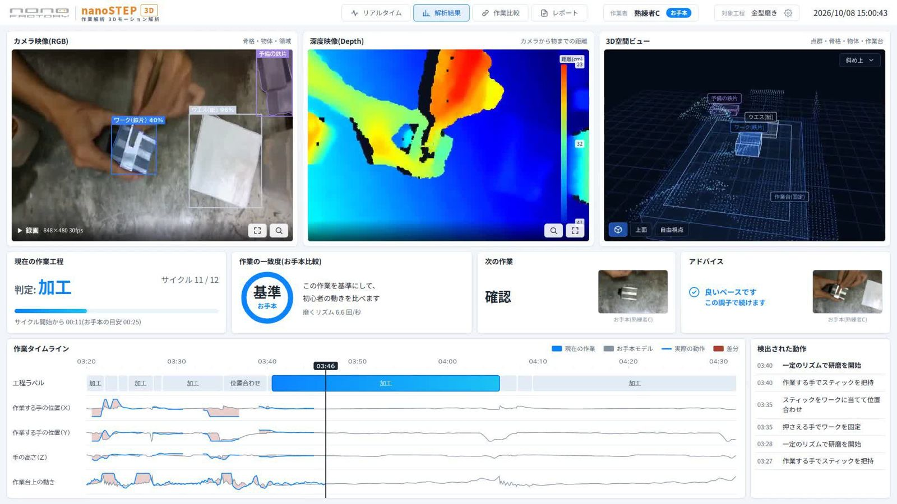
工程ごとに分析位置・加工・確認などの作業の区切りを認識し、工程ごとの時間と手の動きをタイムラインに並べます。お手本との一致度も、工程の順序・リズム・ペースごとに出します。
※掲載している画面は開発中のものです。
解析した熟練者の作業データを、新人の教育に返します。見て覚える、やってみる、違いを直す、成長を確かめる。ベテランが付きっきりで教えていた部分を、4つの機能が受け持ちます。
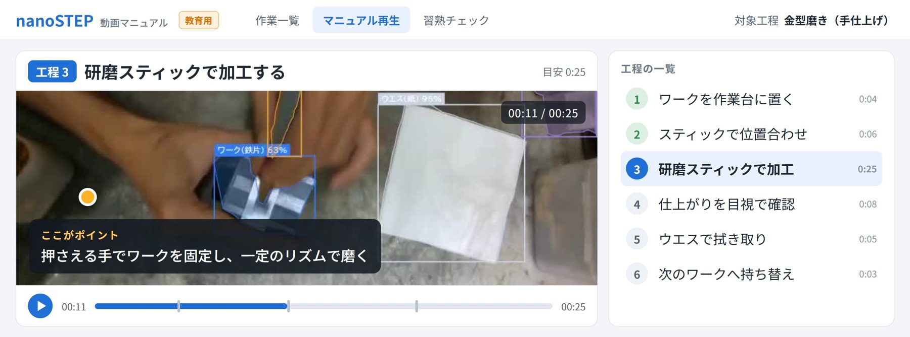
効果口で説明しにくい動きも、見て分かる。誰が教えても、同じ内容を伝えられます。
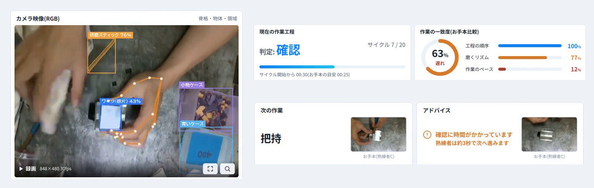
効果教えるのはAI。指導者が横に付きっきりで教える時間をなくし、ベテランは本来の仕事に戻れます。
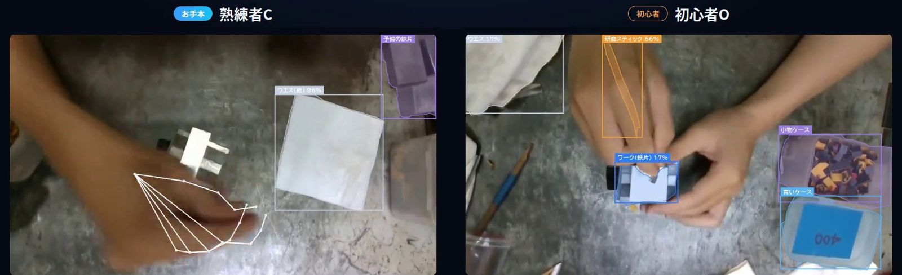
効果「見て覚えろ」ではなく、直す点を具体的に伝えられます。伸び悩んだときの手がかりにも。
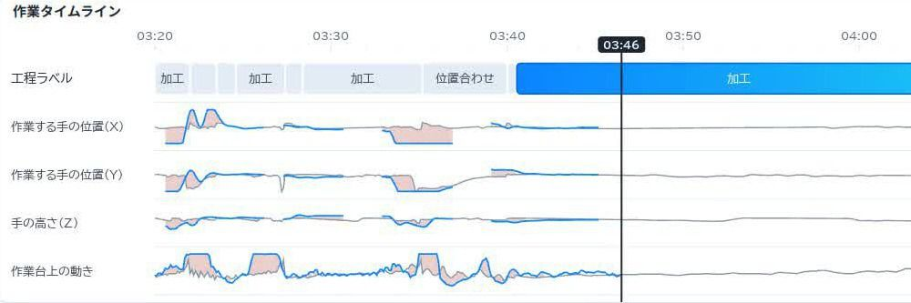
効果教えた成果を、感覚ではなく記録で確かめられます。改善前後の比較にも使えます。
自社で解析して使いたいならnanoSTEPのソフトを。解析の結果から改善策まで任せたいなら、nanoSTEPを使った、グループ会社である本多プラスの作業解析サービスPLUSTEPとして。どちらに進むかは、PoCの結果を見てから決めていただけます。

対象の作業に合わせて、検出する工具・部品と工程の区切りをnanoFACTORYが設定し、お客様の現場に入れます。解析画面はお客様自身で使っていただけます。
対応：nanoFACTORY 現場に入って開発するFDEで、作業に合わせた機能を追加することもできます。
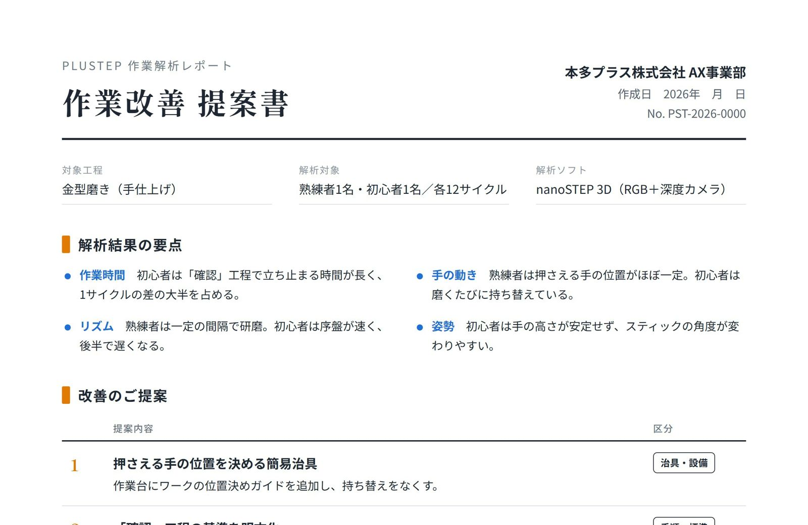
nanoSTEPを使った、弊社nanoFACTORYのグループ会社である本多プラスAX事業部のサービスです。解析結果を製造業を熟知したAIエンジニアが読み解き、製造現場の目線で具体的な改善策をご提案します。
対応：本多プラス × nanoFACTORY 樹脂成形メーカーが自社工場で積み重ねてきた改善の経験をもとにご提案します。
ご相談の窓口は、どちらもnanoFACTORYです。ソフトだけか改善提案までか決まっていなくても構いません。対象の作業を伺い、合う形をご提案します。
作業を認識する同じ仕組みを、業種や使い方に合わせて応用しています。
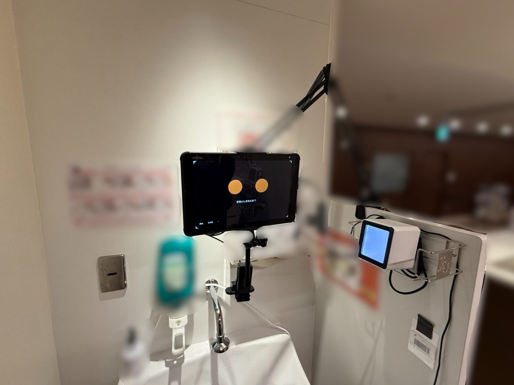
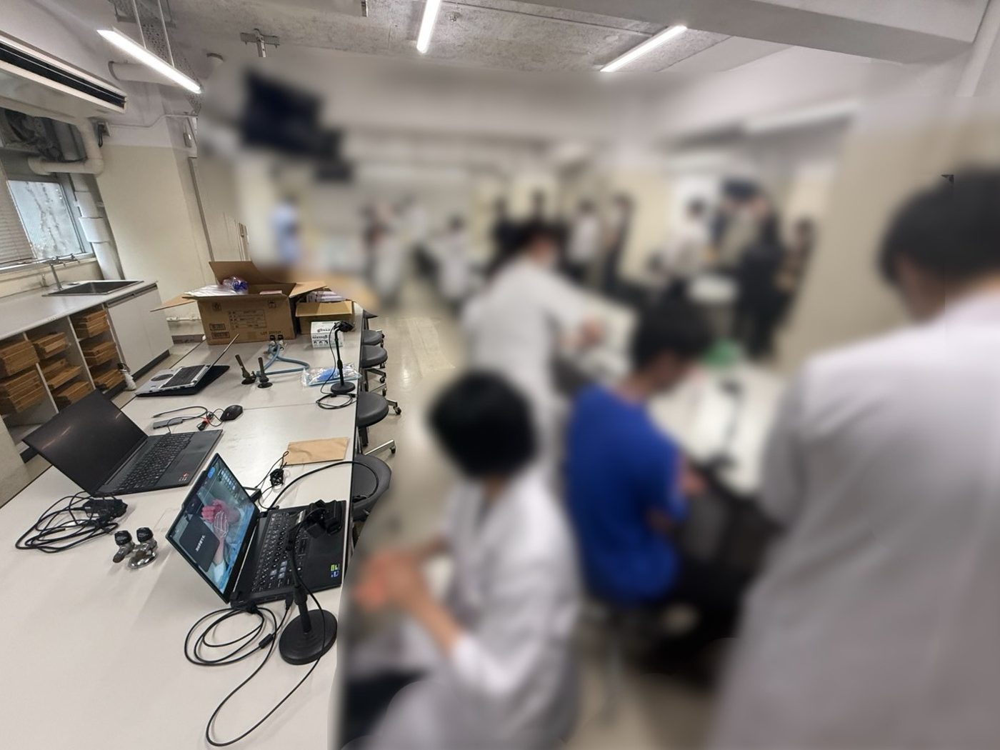
作業認識AIを応用したSANICAM（AI手指衛生モニタリングカメラ）の実証実験を、2026年6月に開始しました。WHOに準拠した手洗いの手順をAIが判定し、記録します。研修医向けの講習会や医学部の授業でも使い、正しく洗えているかをその場でフィードバックしています。
SANICAMを見る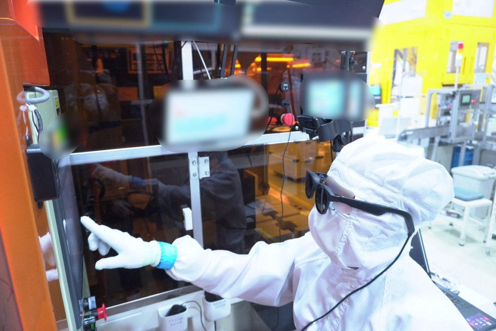
実習生がARグラスを着けると、視界の中に作業手順が表示されます。AIが今の作業を認識し、次に行う動作と注意点を出す仕組みです。母国語の手順書がなくても、ベテランが横に立たなくても、標準作業をその場で再現できます。
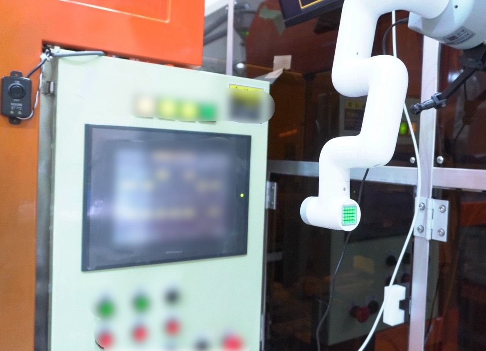
作業を認識する仕組みは、そのままロボット制御の入力にも使えます。熟練者の動きを学習データにして、ロボットアームに同じ作業をさせる取り組みです。重い物の扱いや繰り返し作業など、人がやらなくてよい仕事を機械に任せることを目指しています。
※CASE 02・03の写真はイメージです。
いきなり現場全体に入れることはしません。対象の工程を決め、カメラを置いて効果を確かめてから、本導入を判断いただけます。
お手持ちの作業動画や工程写真をもとに、解析したい作業と困りごとを整理します。
対象の作業台にカメラを置き、現場の作業で解析できるかを確かめます。
結果を見て、ソフトだけか、改善提案まで（PLUSTEP）かを判断いただきます。
記録・解析を続け、教育や改善への反映と、運用中の調整を支援します。
※期間は、対象の工程数やカメラの台数で変わります。
映像の処理は、現場に置くエッジ機器の上で行います。クラウドへ映像を送らない構成で運用できます。データの保管と削除の扱いは、PoCの前に取り決めます。
作業台1か所につき、1台から始められます。作業の範囲が広い場合や、手元が隠れやすい場合は、台数を増やすこともあります。
手や工具の位置を3Dで測るため、奥行きを測れる3Dカメラを使います。今のカメラが使えるかは、ご相談のときに確認します。
ありません。作業台の上のカメラで撮るだけなので、普段どおりに作業していただけます。
はい。病院の手指衛生（SANICAM）のように、手順が決まっている作業であれば応用できます。対象の作業を伺って判断します。
nanoFACTORYです。ソフトだけ・改善提案まで（PLUSTEP）のどちらでも、窓口は同じです。PLUSTEPの場合は、本多プラスと一緒に対応します。
ソフトだけか改善提案までか、決まっていなくても構いません。下のボタンを押すと、記入項目入りのメールが開きます。
Email: